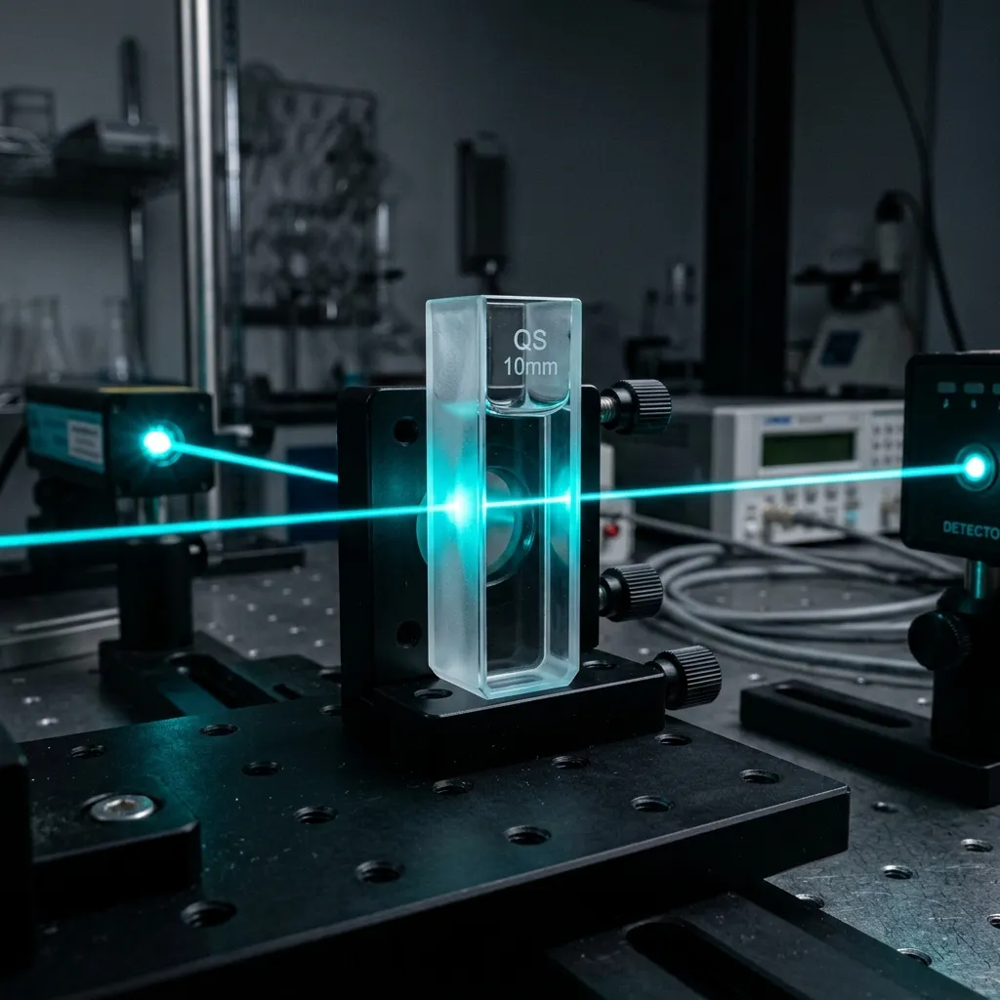

Abyssal Quartz Optics Engineered for 600-Bar Benthic Spectroscopy
Nadir Quartzware manufactures and dispatches synthetic fused-silica cuvettes directly to oceanographic research vessels worldwide.
In deep-sea bioluminescence analysis, a single background photon or micro-scratch on a cuvette window invalidates weeks of abyssal sampling. We synthesize high-purity Suprasil fused silica into optical cells with zero detectable internal autofluorescence and dimensional tolerances within ±0.005mm. From portside labs in Kiel to research submersibles on the Kermadec Trench, our inventory is packed, certified, and dispatched within 24 hours of requisition.

Standard optical glass and commercial quartz cuvettes contain trace hydroxyl (OH) groups and metallic impurities that fluoresce when excited by 280nm UV lasers. Under the extreme hydrostatic pressures of the bathypelagic zone, these structural lattice flaws induce birefringence, scattering excitation light and masking the delicate luminescent signals of abyssal organisms. Nadir Quartzware uses a flameless gas-phase oxidation process to synthesize Suprasil 3001, yielding a synthetic quartz material with an OH content below 1 ppm and zero bubble inclusions under 100x optical inspection.
Every cell in our Abyssal Series is fused using high-temperature molecular bonding rather than chemical adhesives or low-melting frits, which leach organic contaminants into solvent samples and fracture under thermal shock. The outer optical windows are ground to a surface flatness of λ/4 and polished to a 10/5 scratch-dig specification, ensuring that laser light passes through the sample chamber without beam divergence or parasitic reflections.
Before entry into our vessel-ready inventory, each batch undergoes 700-bar hydrostatic cycling in our pressure-testing chamber, followed by spectrophotometric baseline logging from 190nm to 2200nm. The complete spectral certificate is laser-etched via micro-matrix QR code directly onto the non-optical frosted handling collar of the cell, allowing instant calibration loading on shipboard instruments.
Our purpose-built optical geometry ensures accurate micro-volume analysis, high-pressure stability, and standard benchtop spectrophotometer compatibility. Path-length accuracy is rigorously maintained, ensuring cell matching within ±0.1% transmission across any selected series.
| Series Name | Path Length (mm) | Sample Vol (µL) | Spectral Range (nm) | Max Pressure (bar) | Stock Status |
|---|---|---|---|---|---|
| Series-1 Standard Macrovue | 10.00 | 3500 | 190 - 2500 | 10 | [ IN STOCK ] |
| Series-4 Micro-Bore Flow | 10.00 | 50 - 100 | 190 - 2500 | 50 | [ IN STOCK ] |
| Series-6 Abyssal Pressure | 10.00 | 350 | 190 - 2500 | 600 | [ LOW STOCK ] |
Hard metrology data confirms our Suprasil 3001 material achieves superior light transmission—greater than 92% transmission from the deep UV to near-infrared spectrum. This minimizes background noise during sensitive marine bioluminescence characterizations.
All batches undergo zero-fluorescence validation under pulsed 266nm UV laser excitation, ensuring that your measurements are free from internal quartz autofluorescence.
We provide direct shipping to international port agents, with customs clearance included, assuring oceanographers that critical optical orders reach research vessels prior to expedition departure dates.
- [x] Kiel, Germany (Primary Hub)
- [x] San Diego, USA
- [x] Cape Town, South Africa
- [x] Yokohama, Japan
> DISPATCH STATS: Same-Day Dispatch to Port Agents for 98.4% of In-Stock Optical Lines.
Streamline commercial purchases for university and institute procurement teams. We offer simple PO processing, credit terms for accredited research institutes, and direct card payments. Institutional volume discounts and Tax-Exempt certificates are accepted upon verification.